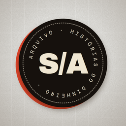

O Arquivo S/A é um canal de vídeos curtos (YouTube Shorts, TikTok e Instagram Reels) que conta, em cerca de um minuto, como empresas e marcas nascem, crescem e às vezes caem — sempre com base em fatos de registro público e fontes citadas.
O OpenSquad Publisher é uma ferramenta de uso privado do próprio canal. Ela roda no computador do responsável pelo canal e serve apenas para enviar e agendar os vídeos produzidos pelo próprio canal nas contas oficiais do canal no YouTube, no TikTok e no Instagram. O aplicativo não é oferecido ao público, não tem cadastro de usuários e não acessa contas de terceiros.
Arquivo S/A is a short-form video channel (YouTube Shorts, TikTok, Instagram Reels) telling true stories about companies, brands and money, based on public-record facts. OpenSquad Publisher is a private, single-user desktop tool used only by the channel owner to upload and schedule the channel's own videos to the channel's own accounts. It is not offered to the public and does not access third-party accounts. See the Privacy Policy and Terms of Service.